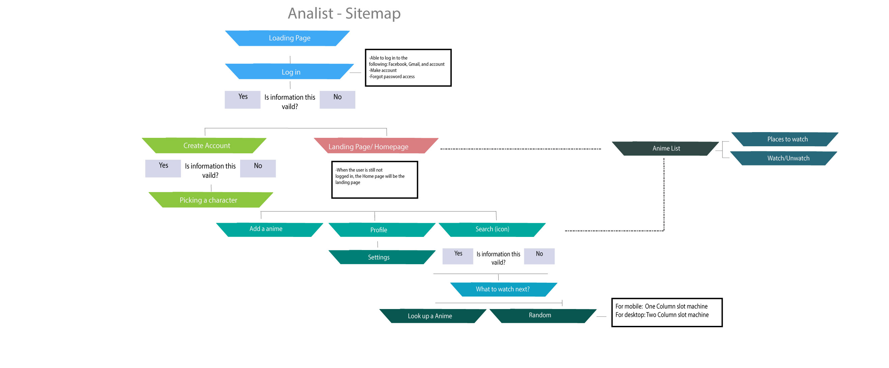

⚌
Even though there are a couple of apps that has methods to see what animes are out their and the abbility to see what you have not seen, the user interface are messy, the user experience is diffcult to understand and they are not mobile friendly.
